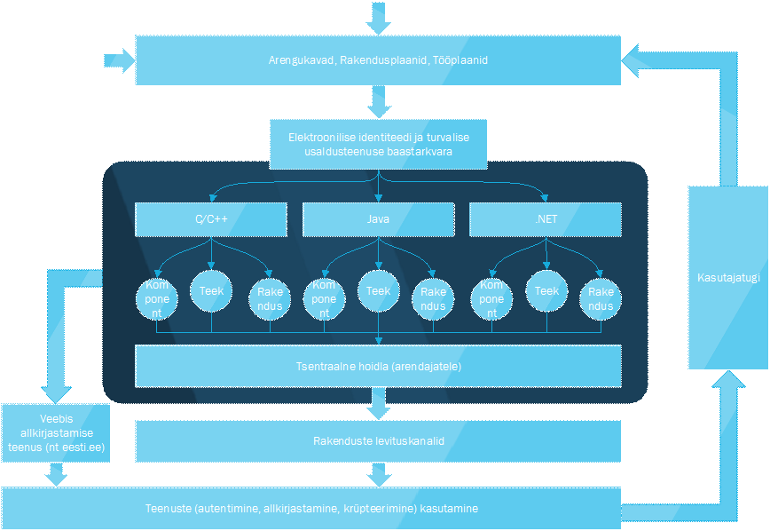
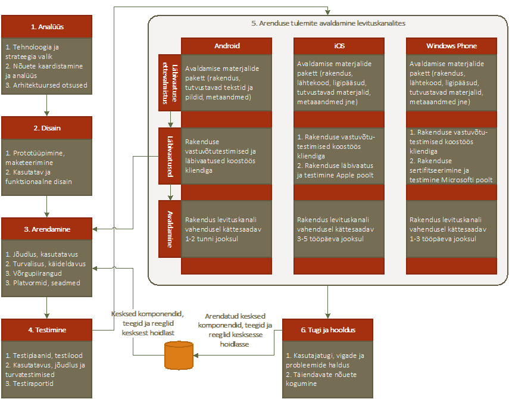

Peatükis kirjeldatakse eID tarkvara arendusprotsessi arvestades järgmiste peamiste aspektidega:
- arendusprotsess peab kindlustama, et arenduseks kasutatakse ajakohaseid komponente, teeke, juhendeid ja reegleid ning püütakse lähtuda põhimõttest – eelistatud on jagatud koodi tootmine ning erisused on lubatud vaid absoluutsel hädavajadusel.
- kesksed, riigi poolt toetatud tehnilised lahendused on avaldatud LGPL või sarnase vabavara litsentsi alusel ning kättesaadavad ja hallatavad keskselt ühest kohast kõigile osapooltele (omanikule, arendajatele jt huvilistele).
- platvormide, tehniliste seadmete ja levituskanalite paljusus toob endaga kaasa täiendavate nõuete ja reeglitega arvestamise kohustuse ning põhjalikumad nõuded testimisse.
Alljärgnevalt on toodud üldine baastarkvara kontseptsioonijoonis, mis kirjeldab pidevalt toimivat elutsüklit, kus protsessi väljundid (rakendused ja nende kasutamine) toodab iteratiivse tsüklina uusi arendus- ja parendusvajadusi (nt läbi kasutajatoe, arengukavade, strateegiate vms).

Joonis 7
. Kontseptuaalne arendusmudel
Mobiilse platvormi arendusprotsess üldises plaanis ei erine väga paljuski klassikalisest tarkvara arendusprotsessist. Kõige suuremaks erisuseks on täiendavad nõuded, mis tulenevalt ühelt poolt eID tarkvara kesksest tarkvaraarenduse põhimõtetest ja teiselt poolt levituskanalite, platvormide ja seadmete paljususest ja mitmekesisusest.

Joonis 8
. Mobiiliplatvormi arendusprotsessi eskiis
Nõuded teenuse omanikule (riigile):
- Omanik kindlustab levituskanalis avaldamise eeldused (kontod) arendajale.
- Omanik kindlustab keskse koodibaasi kättesaadavuse, korrastatuse ja ajakohasuse.
- Omanik kindlustab kasutajatoe rolli ja funktsioonide täitmise.
Nõuded teenuse arendajale (riigi arenduspartnerile):
- Arendaja kasutab alati arenduste elluviimisel ühtses koodibaasis olevaid lähtekoode.
- Kesksete komponentide täiendavate paranduste ja arenduste tulemusena tuleb need avaldada LGPL või sarnase vabavara litsentsi alusel. Arenduse tulemid laetakse arendaja poolt tagasi kesksesse koodibaasi.
- Arendaja kindlustab asja- ja ajakohaste uuenduste ja parenduste avaldamise levituskanalis omaniku poolt loodud konto vahendusel.
- Arendaja kohuseks on jälgida levituskanalis kasutajate poolt antud tagasisidet ning teha nende põhjal ettepanekuid teenuse omanikule.
- Arendaja kohuseks on platvormide ja levituskanalite nõuete ja heade tavade järgmine.
Ehk siis arendusprotsess peab ühelt poolt kindlustama:
- PKI lahenduse põhimõtete täitmise
- Teiselt poolt levituskanali ja platvormi nõuete täitmise
Arenduse tulemid peaksid olema avaldatud üheaegselt (kui tegu ei ole platvormispetsiifilise veaparandusega. Kuna levituskanalitega kaasnevad täiendavad ajalised (määramatud) viited, siis selle praktikas saavutamine võib tähendada täiendavate reeglite või poliitikate väljatöötamist.